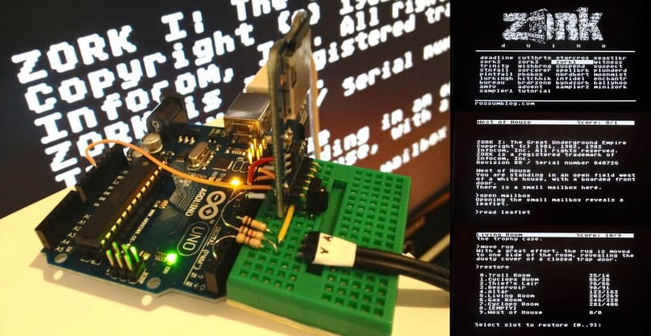

The Zcode Intersection in Quendor
As this series has moved along, It's very clear that zcode is the intersection between the bits and bytes and the Z-Machine architecture, which I've briefly introduced when talking about memory and state. What this comes down to is the actual "interpreting" part of writing a Z-Machine interpreter.
When we talk about "zcode" what we're really talking about is a bytecode compiled language. The native language of the Z-Machine is this assembly language, just as 6502 assembly language was the native language of the Commodore 64.
At this point, I should note that there is a document referred to as the Inform Designer's Manual, version 4 (often abbreviated as DM4), which serves as documentation for the Inform development system.
Inform, which is a compiler, is often viewed as the successor to Infocom's tooling since Inform can produce zcode that works very similarly to what Infocom's compilers were able to produce. There are two major versions of Inform: Inform 6 and Inform 7.
The DM4 has a few things to say about the Z-Machine architecture and, in that context, this snippet of code is provided:
"The answer is ", 3 * total + 1;
This is essentially a statement in the high-level language of Inform, which is very different than the ZIL that Infocom was using. An equivalent ZIL might look something like this:
<SETG TOTAL <* ,TOTAL 3 >>
<SETG TOTAL <+ ,TOTAL 1 >>
<TELL "[ The answer is " N .TOTAL ".]" >)>>
However, the nature of the source code matters not at all. What matters is the bytecode. The above logic, in either case, would be rendered something like this:
@print "The answer is ";
@mul 3 total -> x;
@add x 1 -> x;
@print_num x;
@new_line;
@rtrue;
What I have there is assembly code. Assembly languages have commands that are called opcodes. In the above example, those are written with an @ sign in front of them. The values supplied to opcodes, such as 3, 1, and total, are called operands.
Opcodes and operands are going to be really important as you start building the a Z-Machine implementation. A zcode program is made up of a sequence of bits and bytes and Quendor, like any such interpreter, essentially has to loop through those sequences.
The Interpretation Loop
Here I'll post again the visual of the Z-Machine architecture:

As you can see in the visual above, the Z-Machine itself has an architecture and, ultimately, you have to implement that architecture if you want to actually emulate the machine itself.
Do keep in mind that the Z-Machine was never an actual machine. The specification is all about creating the virtual Z-Machine. Thus, that architecture that you emulate is the architecture of the virtual machine as laid out in the specification.
While the architecture may seem a little daunting, I'm finding that I can consider the architecture part in stages I'm designing how Quendor will act as an emulator and an interpreter.
The simple part of the architecture, and the first to be implemented, can be thought of as the interpretation loop. Then there's the more complex part of the architecture, which is the actual emulation of the virtual machine so that the interpretation loop is carried out correctly.
"Carried out correctly," in this context, means being able to actually play one of the games, like Zork, that run on the Z-Machine. A simple view of that would be this:
Here the source code is actually the bytecode and that is fed into the interpreter which "does stuff" and then that produces some output. But how exactly is that output produced? Well, that takes me to the simple part of the interpreter loop, where Quendor will have to do the following:
- Load a story file that contains zcode.
- Get the byte contents of the story file.
- Determine which byte the story execution starts at.
- Decode the instruction at the starting byte.
- Loop through any remaining instructions.
A "story file" is what Infocom called their game files because they felt they didn't just produce "text adventures," but rather interactive stories.
The above loop looks like this:
The byte contents of the file are essentially the starting state of the game. As the game is played, different instructions will be carried out, based on whatever the player does, and that will change the state of the game. For example, in Zork the player can open a mailbox and take a leaflet out of that mailbox. The player can open a trapdoor and descend into a dungeon whereupon the trapdoor will be closed and locked behind them. All of thse are changes to the state of the game based on player action.
A Focus on Decoding Opcodes
Step 4 above is clearly the most involved of this initial part of the architecture. To write Quendor, I essentially have to understand how to determine the nature of instructions, which is where the Z-Machine specification comes in. After I have that part down, then I have to provide an implementation for each instruction. Once again, I'll have to turn to the Z-Machine specification to understand how to do that.
That's the low-hanging fruit of the architecture I have to implement. Once that bit of architecture is in place, the work comes down to implementing all of the instructions. So, with the above assembly example, I have to provide implementations of @print, @mul, @add, @print_num, @new_line, and @rtrue.
Don't Forget the Operands!
But it gets tricky. I mentioned that some opcodes take operands. Operands can only be constants or variables. So consider this assembly instruction:
@add x 1 -> x;
This instruction adds x (a variable) and 1 (a constant), storing the result of this addition back in x. And this brings up an important point: some opcodes store values and some don't. So this is a part of the architecture that I need to implement. One part of that, for example, would be the stack.
The reason this is relevant so quickly is because, looking ahead a bit, I found that one of the first opcodes I'll work with in implementing a Z-Machine is the call opcode and, in that context, the stack can have some relevance.
Think About the Stack
For now I'm going to keep this pretty simple. The Z-Machine contains a stack which is accessed with a stack pointer. The stack is basically nothing more than a bucket of values. Quendor must write to and read from this bucket by using the stack pointer.
- Writing to the stack pointer means placing a value on top of the stack.
- Reading from the stack pointer means a value is taken off the top of the stack.
A naunce here is that each routine in a zcode story file has its own stack. Some people like to refer to a "call stack" (for all routines) and then each routine itself having its own "evaluation stack."
Let's consider another way that things can happen. Consider the following assembly:
@je x 1 ?Xisone;
@print "x not equal to 1";
.Xisone;
The instruction @je means "jump if equal" and what this does is test an operand, in this case x, to see if it's equal to another operand, in this case 1. If that's the case, the code will jump to the label called Xisone, effectively skipping the @print instruction.
And this brings up another important point: some opcodes can branch. This results in execution jumping to a different place in the code if some condition turns out to be true.
What the above is showing me is that some of these instructions are more complicated than others. So when building Quendor, and the implementation of the instructions, I do need to have some understanding of the Z-Machine architecture.
I'll have to learn, for example, how attributes are dealt with (they can only be true or false; set or unset). I'll have to learn how properties are dealt with (they can contain values). I'll have to learn how the object table works (so that I can make sure object manipulation occurs as it should so that object relationships are maintained). I can see the complexity horizon here!